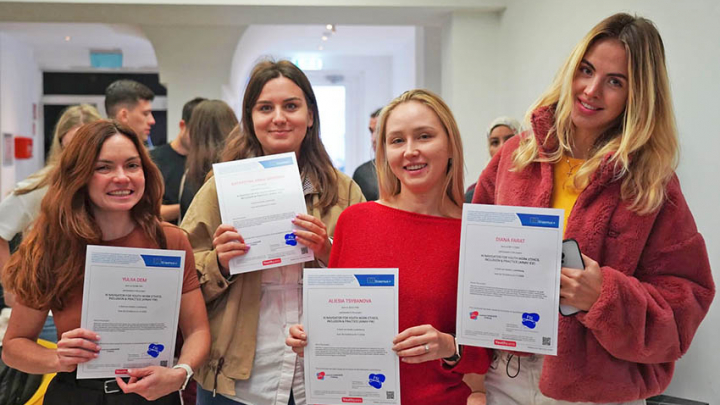
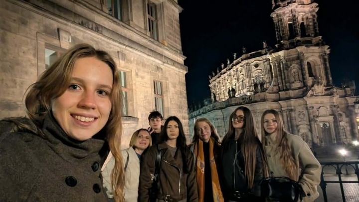
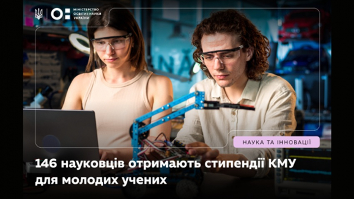
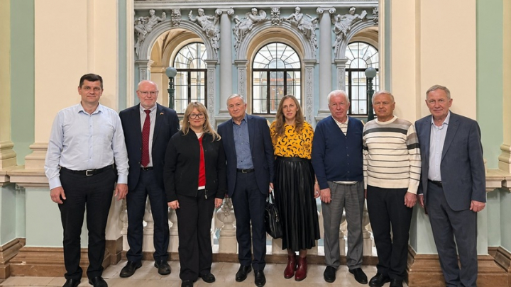
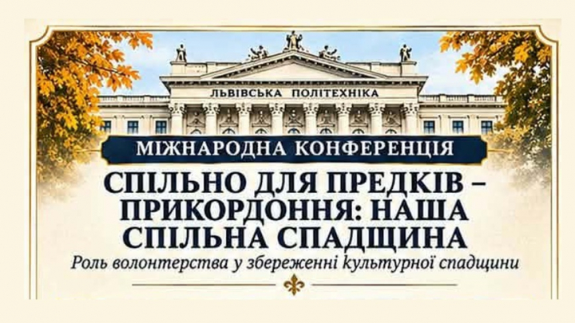

10 ЛИСТОП. 2026, 17:00
Студентка ПЕЕТ Діана Фарат — учасниця тренінгу Erasmus+ «AI Navigator for Youth Work»
(Люксембург)

10 ЛИСТОП. 2026, 15:52
Компетентності для розробників залізниці: кафедра ІТ представила досвід підготовки
бакалаврів і магістрів

10 ЛИСТОП. 2026, 14:42
Студентка кафедри ММП долучилася до міжнародного молодіжного обміну в Дрездені

10 ЛИСТОП. 2026, 12:45
Безкоштовний вебінар «AI-асистенти vs EdTech: як змінюється конкуренція на ринку цифрового
навчання»

10 ЛИСТОП. 2026, 12:05
13 молодих учених Львівської політехніки отримають стипендії Кабінету Міністрів України

10 ЛИСТОП. 2026, 11:20
«Політична заангажованість не повинна підміняти історичний аналіз»: розмова з Іванною
Чернецькою — переможницею 84-ї студентської науково-технічної конференції ІСН

10 ЛИСТОП. 2026, 10:13
Золото ІСФК на першому курсі: історія студента кафедри ПЗ Антона Перебиноса

9 ЛИСТОП. 2026, 16:52
Крок до майбутнього: «Дні Політехніки» завітали до школи № 9 Львова

9 ЛИСТОП. 2026, 15:50
Від радіолокації та навігації до інтелектуальних систем: кафедра РЕТЗ запрошує на День
відкритих дверей

9 ЛИСТОП. 2026, 15:10
Роботи, що змінюють місто: у Львівській політехніці відбувся фестиваль робототехніки

9 ЛИСТОП. 2026, 14:15
У Львівській політехніці відбулися гостинні лекції професора Мюнхенського технічного
університету

9 ЛИСТОП. 2026, 12:51
Міжнародна науково-практична конференція «Спільно для природи – прикордоння: наша спільна
спадщина. Роль волонтерства у збереженні культурної спадщини»